By the end of this exercise, you will have a high
level understanding of BPEL 2.0 and will be familiar with
the build-deploy-test cycle of GlassFish ESB applications.
This exercise introduces basic ESB concepts in the
following hands-on stages:
A BPEL 2.0
process can be deployed to GlassFish ESB for
orchestration of various service providers.
BPEL processes may in turn be exposed as web services for client
consumers to
initiate business flows.
Using the ESB components, BPEL may be attached as a listener to a
database, SMTP or
JMS destination; or may even read from a file.
The interface for a BPEL business process is defined in a
standard WSDL format.
New WSDL files and any accompanying XML Schema Definitions (XSDs)
required for a BPEL business process can easily be created in the
NetBeans IDE. NetBeans includes a WSDL document wizard and WSDL / XSD
editors. It is also possible to import and use an existing WSDL
definition.
Create a new BPEL process
Create a new BPEL Module
In NetBeans, BPEL Module projects are required to create one
or more BPEL 2.0 process definitions. Create a
new BPEL Module project by selecting File > New Project >SOA
from the NetBeans menu bar, and select BPEL Module from the SOA
category, as shown below:
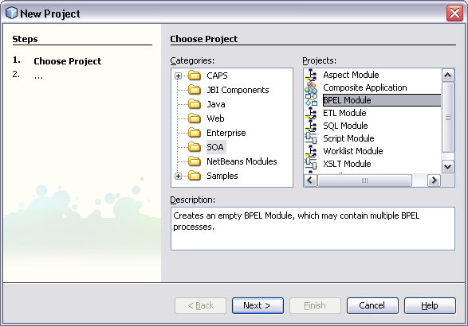
Click Next and in the next window, name the project
'CaptureJ1Polls'. Keep the default Project Location and Folder and
click Finish.
Import the WSDL
Every BPEL module requires an underlying WSDL to represent its
interface. For this
exercise, a pre-built WSDL file is provided and will be used
to define the new BPEL
2.0 service and will also be used by any consumers of this service.
Download survey.wsdl
and save it with a WSDL extension to a local folder. To
download the WSDL, right-click on the survey.wsdl
link and save the link as a WSDL file to a local directory.
To import the WSDL into NetBeans, right-click on the BPEL
project
and select New... > External
WSDL Document
Note: The
first time you do this, your New menu
history will not show External WSDL Document. In this case,
select Other...
and
select External WSDL Document from the XML category as
shown below.
In the next window, select From Local File System and
browse to
the location where survey.wsdl was saved. Then click Finish
to begin the import process.
Create the BPEL Process
Right-click the newly-created BPEL project and click New
> BPEL Process
as shown below.
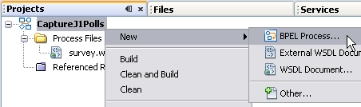
Choose an appropriate name for the BPEL process (CaptureJ1Polls
is used in this example) and click Finish. This will create an
empty BPEL process. The following steps explain how
to add functionality to the process by adding activities, partner links
and transformations or mappings.
Implement the Business Process WSDL
Drag and drop the survey.wsdl file onto the partner
lane (as indicated by the arrow
below). Notice how the anchor lights up to indicate a valid
location to drop the WSDL to. This will launch the Create New
Partner
Link dialog.
Note: The
above step effectively imports the WSDL into the BPEL process and
project.
In the Create New Partner Link window, give the partner
link an
identifiable name (PartnerLinkJavaOnePoll).
Select the radio button underlined in the figure below to Use a
Newly Created Partner Link Type (selected by default), check the Process
will
implement (My Role) checkbox and uncheck the default Partner
service will implement (Partner Role) checkbox. Finally, provide a
role name for
the process (javaOnePollRole) and click the OK button to
continue.
Note: This
instructs the BPEL process to implement a new service using the
provided WSDL (rather than using it for the purpose of invoking an
external service). The Partner Link name will be used later
during
configuration and packaging to associate the abstract WSDL port to a
concrete
protocol (such as SOAP).
Configure BPEL Receive
Drag and drop
the Receive construct from the palette onto the BPEL process
canvas, as shown below. This represents a logical 'receive' of the
input message for the WSDL operation.
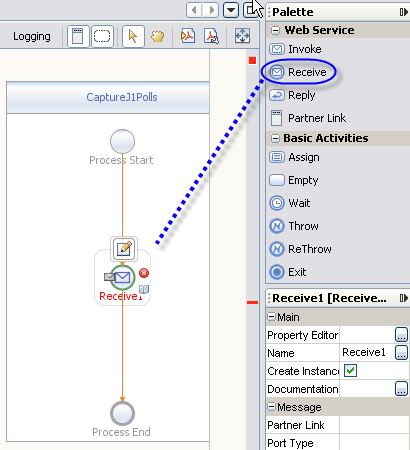
Note:
Valid
placeholders are highlighted on the BPEL canvas prior to dropping the
construct on the canvas. This feature aids the user in building up the
process easily and minimizes the possibility of errors.
Click the Edit icon that appears when you select the
newly-created Receive activity.
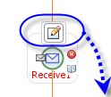
In the Property Editor, give the
receive activity a name (getPolls) and then configure the Receive
activity by mapping it to the WSDL constructs. To do this, select the Partner
Link from the drop-down menu. In this case, there should only be
one to choose from.
Likewise, by selecting this partner link, the single Operation
available is selected
automatically. Finally, an input container is required to store
the
incoming data to the BPEL process. Click on the Create button
and choose the
default name for the variable. Finally, leave the Create Instance
checkbox in the checked state and click the OK button to
continue.
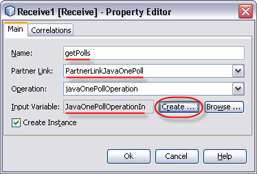
Note: Do
not miss the 'Create...' variable step. Without an
Input Variable, it will not be possible to perform the mapping required
in the next
exercise.
The BPEL Design view at this stage will appear as follows:
Note: The
Receive
construct is one of the entry points to a BPEL process. Other
options are Pick and OnEvent. Each of these activities
will require a Partner Link that will be used later to bind it
to a
concrete
partner. A Receive will always have an input variable that
represents
the message being received by this BPEL instance and the receipt of
this incoming message will result in the creation of a new BPEL
instance to process it, hence the checked Create Instance
checkbox in the Property Editor dialog box.
Configure BPEL Reply
In this exercise, you will build a BPEL process based on
Request-Response message
exchange process, i.e. for every request coming into the BPEL process,
the consumer/caller will wait to receive a response from the process.
In the
previous step, you configured a Receive activity, and now you
will
associate a Reply activity. Drag and drop a Reply
construct from the palette to just below the Receive activity
on the BPEL canvas (created in the last step). Follow
the same steps to edit the Reply activity, this time
remembering to create a new Output Variable.
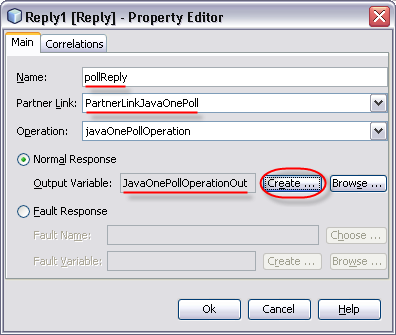
The updated BPEL Design view at this stage will appear as
follows:
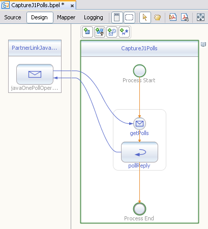
Note: The
BPEL
could also have been
modeled with an In-Only or In-Only with Acknowledgment
Message Exchange Pattern (MEP) in which case a Reply would be
unnecessary. The available MEPs are defined in the JBI specification.
Configure BPEL Assign
So far, you have built the outer shell of a BPEL process. It is
necessary to add some data mapping
logic between the Receive and Reply activities. For the sake of
simplicity, the mapping rule used in this exercise will be trivial.
Drag and drop the Assign activity from the
palette and place it between the Receive and the Reply
activities on the BPEL canvas.
Click on the new activity and rename it to mapResponse,
as shown below. It will be displayed in red
since the assignment is initially empty.
Click on the Mapper view in the BPEL editor (or
double-click the new Assign
activity in the canvas) to
switch to the BPEL Mapping view. You will assign a string value of "success"
to the output variable. To do this, on the rightmost target pane,
expand the
node for
the output variable so that a blue swim lane is exposed for the
part1 child node. Assignments
from source nodes and/or operators to the target node will be made in
this blue swim lane.
From the String operator palette, select String
Literal. This will
create a new, empty string literal in the selected swim lane.
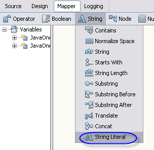
Note: Drag
and drop is also supported for adding the operators and functoids to
the required swim lanes. However, you may find that the point and click
style is quicker to use in practice.
Type into the text area of the newly-created literal and give
it a value of 'success'. Then connect it to the target node JavaOnePollOperationOut
> part1 as shown below:
Note:
Remember to connect the literal to 'part1' as shown above. Failure to
do so will result in a build error - The
XPath expression contains the ";" symbols.
Save and Validate BPEL
The BPEL process implementation is now complete and ready to
validate.
Use the Ctrl+S NetBeans keyboard shortcut to save it at any
time. Switch back to the BPEL Design view and validate the BPEL
using the Validate icon, as shown below:
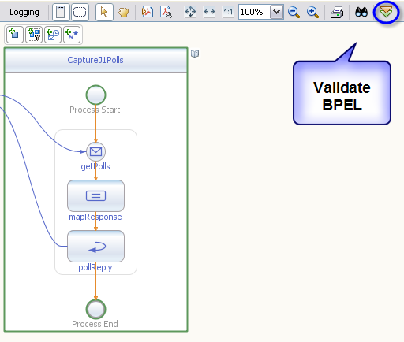
You can also validate by right clicking on the BPEL source file
and
clicking Validate XML
from the Projects view:
The output window will show the results of the validation -
there should not be any errors at this stage, as shown below:
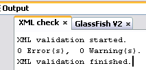
Note: You
may see a warning - The variable
"JavaOnePollOperationIn" is initialized and not used. This can be
safely ignored
since the inbound message is intentionally not being used at this stage.
Right click the BPEL project and select Build to build
a JAR file for this BPEL module.
Build and Deploy the Composite
Application
Some definitions
Service Unit: The smallest deployable unit targetted for
a JBI container (i.e. Service Engine or Binding Component). The JAR
file containing the built BPEL module in the previous stage is a
Service Unit.
Service
Assembly: Multiple Service Units constitute a service
assembly. Building an OpenESB / GlassFish ESB composite application
generates a Service
Assembly as a .zip file, which also contains a deployment descriptor.
This deployment
descriptor helps to determine the target containers for the Service
Units (e.g. BPEL service engine, Database binding component, etc...)
Composite
Application Service Assembly (CASA): This is a NetBeans editor
used to configure, build and deploy a service assembly.
Create a new CASA project
In NetBeans, launch the New Project wizard
by selecting File > New Project > SOA. Name the Composite
Application J1PollCASA and click Finish.
Add BPEL Module to CASA
Drag and drop
the CaptureJ1Polls BPEL module from the project pane into the JBI
Modules lane of the CASA editor's canvas. This will add the BPEL
service unit created earlier as
a JBI module in the newly-created Composite Application.
Build Composite Application
Right click on the CASA project and click Build to
build it.
This generates the Service Assembly for deployment to the JBI
runtime in GlassFish. Alternately, the build
project shortcut from CASA can be used
If all went well, you should see a BUILD SUCCESSFUL
message in the
output pane and the CASA design view will be updated. CASA
automatically creates a SOAP binding (to deploy to the SOAP binding
component) and connects it to our BPEL module as shown below:
Note: The
CASA
editor automatically understands that the BPEL module is implementing a
WSDL that contains a SOAP endpoint and therefore added a SOAP BC
(binding
component) to the service assembly. The SOAP protocol is hence the
concrete binding for the PartnerLinkJavaOnePoll partner link
configured
previously in the BPEL module.
Select the SOAP port on CASA and view the properties pane.
You will notice that the SOAP binding (to be exposed as the webservice
entry point) has inherited the default SOAP address from the original
WSDL.
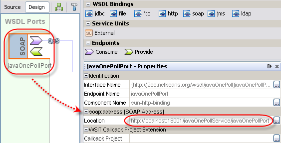
Note: The
port specified will be used to create a new listener in GlassFish
(using Grizzly) listening
on port 18001 for web service requests. For reference, the SOAP address
(and therefore port) can be changed by right-clicking on the SOAP port
in CASA and selecting the Clone WSDL Port to edit option. This
allows you to override and extend the original WSDL and its properties.
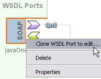
Deploy Composite
Application
To deploy the built application, right click on the
Composite Application project and select Deploy. You may also
use the Deploy project shortcut button in the CASA editor.
Note: If
your
GlassFish instance is not up and running, the Deploy operation
will start the server automatically for you. If prompted, the default
admin user password is adminadmin.
Build a Test Case
The BPEL process is exposed via a web
service endpoint. CASA provides users a simple way to create and run
unit tests against the deployed
composite application. In this stage, you will test your web service
(i.e. business process) using this
integrated testing tool.
Create New Test Case
Right click on
the Test folder under the Composite Application module in the
NetBeans Projects view and select New Test Case from
the context menu.
Use the default name TestCase1 and click Next
to continue.
Select WSDL operation to invoke
Select the WSDL file from the BPEL module.
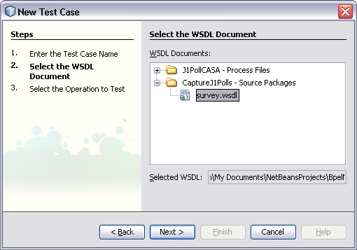
Select the operation in the WSDL and click Finish
Specify test data
NetBeans generates the unit test case as show below with
default input values generated from the WSDL and its data types.
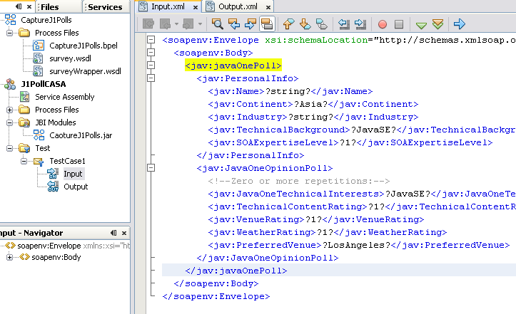
You will notice that default data values created by the
testcase are surrounded by '?' in all fields. These need to be removed
(for instance, an integer with ? will fail
validation). You may edit the input manually or replace the default
input message by copying and pasting the sample input message below:
Right-click the test case and click Run to send the
request to your deployed application
on GlassFish.
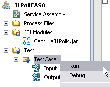
This dialogue means a valid
SOAP response is being returned from the application but the expected
output is currently empty.
Select Yes when the following dialog pops up.
Note:
When creating a new Test Case, a
sample Input message with junk values, and an "empty" Output message
were automatically created for you. On your first run, ignore the
Failed status since
your valid response was compared against the default 'empty' output
value, which is expected to fail. Select
'Yes' in the above dialog so that the most recent output (the SOAP
response with the
'success' string) is saved as the correct expected output for future
test runs. Subsequent runs will now show as passed.
View the response by double-clicking it
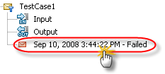
If the response returned contains the string success
that was
assigned from the BPEL mapping assignment, it means the test succeeded.
Integrate with the web application
The next stage after successfully invoking the business process
webservice with a
test client is to integrate it with the web application deployed to
GlassFish earlier. This will complete the integration of the
presentation tier
with the newly created application tier application.
Fill in the poll data as shown above. Note that the Service
Endpoint Address is defaulted to the address of the BPEL webservice
created in the previous stages. This should not be changed unless the
default endpoint URL specified in survey.wsdl was changed.
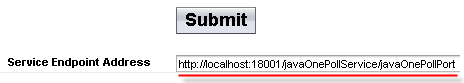
Submit poll data
Click Submit to submit the web form data. You should
see the response mapped earlier in the BPEL assignment (success)
printed out next to the Submit button.
Summary
In this exercise, you learned to create, build, deploy and test a
simple BPEL 2.0 process in GlassFish ESB.